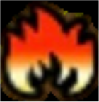
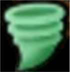
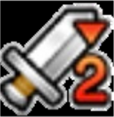
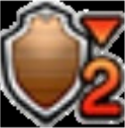

ホークブリザード
♧ 系統
鳥系
♧ 極のステータス（ぬけめがない）
| さいだいHP | 1024(42位) |
|---|---|
| さいだいMP | 380(18位) |
| こうげき力 | 428 |
| 守備力 | 532(45位) |
| こうげき魔力 | 490(26位) |
| かいふく魔力 | 505(6位) |
| きようさ | 647(8位) |
| すばやさ | 429(47位) |
※順位は94体中です
♧ 属性耐性
 メラ メラ
|
-50% | ギラ | -25% |
|---|---|---|---|
 デイン デイン
|
0% |
 イオ イオ
|
+25% |
 ヒャド ヒャド
|
+75% | バギ | 0% |
 ドルマ ドルマ
|
+50% |
 ジバリア ジバリア
|
0% |
※+は耐性、-は弱点です
♧ 状態異常耐性
 眠り 眠り
|
とても弱い(0%) |
|---|---|
 麻痺 麻痺
|
無効(100%) |
 混乱 混乱
|
無効(100%) |
| 幻惑 | とても弱い(0%) |
| 休み | とても弱い(0%) |
| 攻撃減 | とても弱い(0%) |
| 守備減 | 弱い(20%) |
 すばやさ減 すばやさ減
|
強い(80%) |
※S(100%), A(80%), B(60%), C(40%), D(20%)
♧ モンスターの評価
◦ 強い点
• ヒャドとイオに強いため、現環境では耐性が超優秀。
• 麻痺と混乱無効は大きい。
◦ 弱い点
• HPと守備力が低いため、耐性は優秀だが耐久力があまりない。
• すり抜けで１体落とされると大体負ける印象。
• 1戦あたりにかかる時間が長くなるため、今の仕様（ぽちぽちゲー）だと使うのがためらわれるのが弱いというより難点。
♧ おすすめ継承スキル
◦ いやしのウェーブ持ち
| スロット | おすすめの継承スキル |
|---|---|
| ベホマラー | |
| ザオラル | |
| キアリク | |
 |
 じゅもんHP回復S じゅもんHP回復S
|
 |
じゅもんHP回復S
|
 |
じゅもんHP回復B |
 |
耐・休みS |
|
耐・メラS |
※とても弱い(0%)→S(100%)を付ければ無効となります
♧ 継承スキル考察
• ベホマラー、ザオラルは確定として、Cスキルに関しては、これからこうねつガスが流行ることが想定されるためキアリクがいい気がしています。
• 赤玉に関してはいうまでもないです。ただし、全継承玉の中で最もゲットするのが難しいです。（レア感あって私は好きですが笑）
• 耐性玉はこの２つで後悔したことがないのでこれで問題ないでしょう。